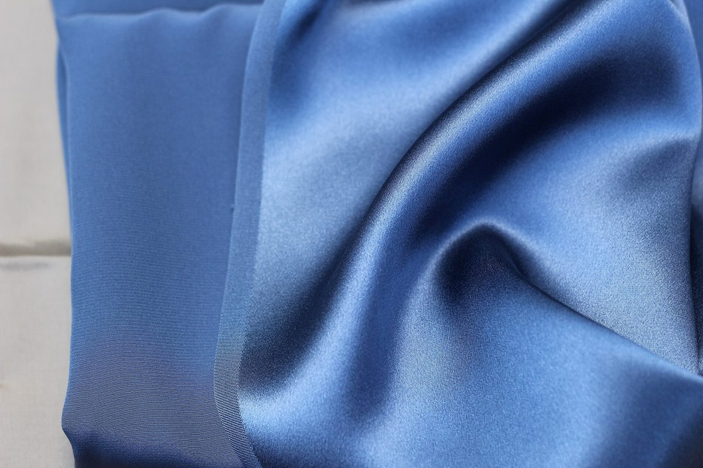

5枚め / 5枚 透明
アクセス
5枚めの透明シート。ここまで重ねた4色が揃い、位置合わせの印(右上の丸)が入って、重ね刷りが完成します。
| 所在地 | 茨城県日立市河原子町３丁目２９−３ |
|---|---|
| 電話 | 070-2178-1117 |
| 営業時間 | 準備中 |
| 定休日 | 準備中 |
| メニュー・価格 | 準備中 |
| ご予約 | 準備中 |
| 駐車場 | 準備中 |
| SNS | Instagram @nonnoncafe.1117 |
最寄り駅からの道のりや所要時間は未確認のため掲載していません。


地図は住所をもとに表示しています。位置が少しずれる場合があります。